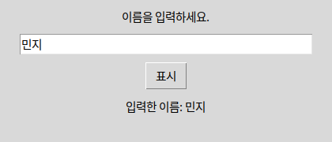
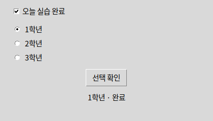
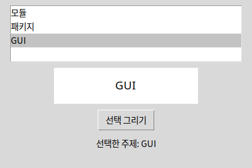
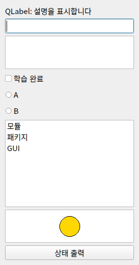
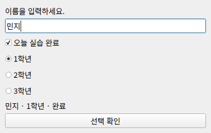

보여줄 글 → Label / 한 줄 → Entry / 여러 줄 → Text받을 정보의 형태를 먼저 정하면 위젯 이름이 따라옵니다. 아래 예제는 역할별로 나뉘어 있습니다.
 인공지능 파이썬 실무
인공지능 파이썬 실무Ⅱ. GUI 프로그래밍 · 주제 03 / 11
보여줄 정보와 받을 입력에 따라 위젯을 선택합니다.
대단원 Ⅱ. GUI 프로그래밍 교과서 40–59쪽
중단원 02. GUI 프로그래밍 작성 · 49–57쪽
소단원 01. tkinter의 구성 요소 · 50–51쪽
이 웹 주제의 연계 범위: 50쪽
웹 학습 주제 03 / 11
보여줄 정보와 받을 입력에 따라 위젯을 선택합니다.
| 역할 | tkinter | PySide6 |
|---|---|---|
| 최상위 창 | Tk | QWidget / QMainWindow |
| 그룹 | Frame | QWidget + Layout |
| 입력 읽기 | entry.get() | edit.text() |
| 표시 바꾸기 | label.config(text=...) | label.setText(...) |
| 독립 선택 | Checkbutton + BooleanVar | QCheckBox.isChecked() |
| 그룹 중 하나 | Radiobutton + StringVar | QRadioButton / QButtonGroup |
| 목록·그리기 | Listbox / Canvas | QListWidget / QGraphicsView |
BEFORE THE CODE
새 이름·속성이 코드에 나오기 전에 짧게 봅니다. 외우기보다 역할을 먼저 구별하세요.
보여줄 글 → Label / 한 줄 → Entry / 여러 줄 → Text받을 정보의 형태를 먼저 정하면 위젯 이름이 따라옵니다. 아래 예제는 역할별로 나뉘어 있습니다.
다른 위젯을 담는 상자입니다. Frame·QWidget이 컨테이너입니다.
체크·라디오 값을 담는 BooleanVar·StringVar입니다. 위젯이 아니라 변수에서 읽습니다.
RESULT PREVIEW

Tk 객체는 기본 창입니다. Label은 표시, Button은 명령, Entry는 한 줄 입력, Text는 여러 줄 입력입니다. Checkbutton은 독립적인 선택, Radiobutton은 묶음 중 하나의 선택, Listbox는 목록 선택입니다. Canvas는 도형·이미지 그리기 공간이며 Frame은 위젯을 묶는 컨테이너입니다.
위젯을 생성한 것만으로 배치가 완료되지는 않습니다. 부모 창이나 Frame을 지정하고 배치 관리자를 호출해야 합니다. BooleanVar·StringVar 같은 변수를 통해 체크 상태와 선택 값을 읽을 수 있습니다.
PySide6에서는 QApplication이 앱 실행을 관리하고 QWidget이 창·컨테이너 역할을 합니다. Label→QLabel, Button→QPushButton, Entry→QLineEdit, Text→QPlainTextEdit, Checkbutton→QCheckBox, Radiobutton→QRadioButton, Listbox→QListWidget으로 개념을 연결합니다. Canvas는 일대일 대응이 아니며 여기서는 QGraphicsScene/View로 도형을 그립니다.
위젯을 한 창에 모두 쌓기 전에, 역할별로 나누어 보세요. Label·Entry는 한 줄 읽고 보여 주기, Checkbutton·Radiobutton은 선택 값 읽기, Listbox·Canvas는 목록과 좌표 그리기입니다. 회원 가입의 이름·소개·약관 동의·학년 선택에 각각 어떤 위젯이 맞는지 고른 뒤 예제에서 값을 읽어 보세요. 57쪽 확인학습의 Frame·Button도 위젯입니다.
예제를 선택하면 바로 아래에서 코드를 수정하고 실행할 수 있습니다. 작성한 코드는 예제별로 저장됩니다.
BEFORE THE CODE
새 이름·속성이 코드에 나오기 전에 짧게 봅니다. 외우기보다 역할을 먼저 구별하세요.
tk.Label(parent, text="설명")짧은 글을 보여 줍니다. 나중에 config(text=...)로 바꿀 수 있습니다.
entry.get()한 줄 입력의 현재 문자열을 읽습니다. 위치 인자가 필요 없습니다.
result.config(text=새글자)이미 만든 라벨의 속성만 바꿉니다. 새 Label을 또 만들면 화면에 겹칩니다.
이름·아이디처럼 줄바꿈이 없는 값입니다. 여러 줄 소개문은 Text를 씁니다.
RESULT PREVIEW

BEFORE THE CODE
새 이름·속성이 코드에 나오기 전에 짧게 봅니다. 외우기보다 역할을 먼저 구별하세요.
done = tk.BooleanVar()체크 상태는 위젯이 아니라 변수에 저장됩니다. done.get()이 True 또는 False입니다.
tk.Checkbutton(parent, text=..., variable=done)서로 독립적으로 켜고 끌 수 있습니다. 약관 동의처럼 "해도 되고 안 해도 되는" 선택입니다.
grade = tk.StringVar(value="1학년")
tk.Radiobutton(..., variable=grade, value="1학년")같은 variable을 쓰는 라디오는 하나만 선택됩니다. value가 서로 달라야 구분됩니다.
IDLE 화면의 Frame·Button처럼 눈에 보이는 부품을 통틀어 위젯이라고 합니다.
RESULT PREVIEW

BEFORE THE CODE
새 이름·속성이 코드에 나오기 전에 짧게 봅니다. 외우기보다 역할을 먼저 구별하세요.
listbox.insert(tk.END, value)목록 끝에 항목을 넣습니다. tk.END는 "지금 목록의 끝"입니다.
listbox.curselection()고른 칸의 인덱스 튜플을 반환합니다. 아무 것도 안 골랐으면 빈 튜플입니다.
canvas.create_oval(x1, y1, x2, y2, fill=...)왼쪽 위 (x1,y1)과 오른쪽 아래 (x2,y2)로 타원을 그립니다. 버튼이 아니라 좌표입니다.
canvas.delete("all")그린 도형을 지웁니다. 다시 그리기 전에 호출하면 겹치지 않습니다.
목록의 몇 번째인지입니다. 0부터 셉니다. curselection()이 그 번호를 줍니다.
Canvas는 칸이 아니라 (x, y)로 그립니다. 왼쪽 위가 (0, 0)입니다.
RESULT PREVIEW

BEFORE THE CODE
새 이름·속성이 코드에 나오기 전에 짧게 봅니다. 외우기보다 역할을 먼저 구별하세요.
frame = tk.Frame(parent, padx=16, pady=16)위젯을 묶는 상자입니다. 안쪽 여백(padx/pady)을 한곳에서 정할 수 있습니다.
tk.Text(parent, height=3)여러 줄 입력입니다. Entry는 한 줄, Text는 여러 줄입니다.
checked = tk.BooleanVar()
tk.Checkbutton(parent, text=..., variable=checked)체크 상태는 위젯이 아니라 변수에 저장됩니다. checked.get()이 True/False입니다.
choice = tk.StringVar(value="A")
tk.Radiobutton(..., variable=choice, value="A")같은 variable을 쓰는 라디오는 하나만 선택됩니다. value가 서로 달라야 합니다.
listbox.insert(tk.END, value)목록에서 고릅니다. insert로 항목을 넣고, curselection()으로 고른 위치를 읽습니다.
canvas.create_oval(x1, y1, x2, y2, fill=...)도형·그림을 그리는 공간입니다. 버튼·입력칸이 아니라 좌표로 그립니다.
위젯.pack() # 생성만으로는 안 보임도감의 위젯도 모두 pack을 호출합니다. 생성과 배치는 다른 단계입니다.
한 창에 여러 위젯을 모아 비교합니다. 실제 화면은 필요한 위젯만 고릅니다.
HISTORY / VIDEO
위젯(widget)은 window와 gadget을 붙인 말로, 창 안의 재사용 부품을 가리킵니다. Tk의 Label·Button·Entry가 바로 그 부품이고, 나중에 보는 Qt·wx·Kivy도 같은 역할을 다른 이름으로 제공합니다.
RESULT PREVIEW
BEFORE THE CODE
새 이름·속성이 코드에 나오기 전에 짧게 봅니다. 외우기보다 역할을 먼저 구별하세요.
text = QPlainTextEdit()여러 줄 입력입니다. tkinter Text에 대응합니다. 한 줄은 QLineEdit입니다.
QCheckBox("학습 완료")
QRadioButton("A")체크는 독립 선택, 라디오는 같은 부모(또는 QButtonGroup)에서 하나만 선택됩니다.
items.addItems(["모듈", "패키지"])목록에서 고릅니다. Listbox.insert에 대응합니다.
scene.addEllipse(...)
view = QGraphicsView(scene)도형을 그리는 공간입니다. tkinter Canvas와 일대일은 아니지만 같은 역할로 연결합니다.
Label→QLabel, Entry→QLineEdit, Text→QPlainTextEdit, Check→QCheckBox입니다. 역할로 외우세요.
RESULT PREVIEW

BEFORE THE CODE
새 이름·속성이 코드에 나오기 전에 짧게 봅니다. 외우기보다 역할을 먼저 구별하세요.
entry = QLineEdit()한 줄 입력입니다. text()로 읽고, clear()로 지웁니다. tkinter Entry에 대응합니다.
done.isChecked()체크 여부를 bool로 읽습니다. BooleanVar 없이 위젯이 상태를 가집니다.
group = QButtonGroup(window)
group.addButton(radio)라디오를 한 묶음으로 만듭니다. checkedButton()으로 지금 선택된 버튼을 얻습니다.
result.setText("새 글자")표시 문자열을 바꿉니다. result.text = "..."처럼 속성을 새로 만들면 화면에 반영되지 않습니다.
라디오를 한 묶음으로 만듭니다. 묶지 않으면 여러 개가 같이 켜질 수 있습니다.
RESULT PREVIEW

CODE WORKSPACE
실행 엔진은 처음 실행할 때 내려받습니다. 패키지 크기에 따라 최초 준비에 최대 3분이 걸릴 수 있으며 네트워크가 필요합니다. 실행은 최대 30초이며 중지 후 다시 실행할 수 있습니다.
실행할 예제를 선택하세요.
PRACTICE / RETRY / UNDERSTAND
이 주제와 연결된 문제만 보여 줍니다. 단원 전체 문제는 단원 안내 페이지에서 이어서 풀 수 있습니다.